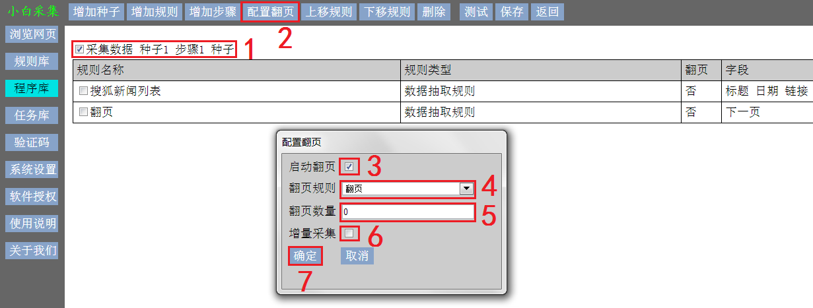

如果目标数据有多页，在目标网页中有翻页按钮或链接，要自动翻页采集
则需要新建翻页规则，并按 3.1.2 增加翻页规则，然后按下面操作配置翻页
翻页规则有两种形式：
一、翻页规则为数据抽取规则，采集字段只有 1 个，其值为下一网页URL
二、翻页规则为网页交互规则，点击按钮刷新下一页数据
目标网页翻页后，如果URL发生了变化，则翻页规则为第一种形式，否则，为第二种形式
-
选择步骤
-
点击 设置翻页 按钮，弹出 设置翻页 对话框
-
勾选 启动翻页 选择框
-
点击 翻页规则 按钮，选择翻页规则
-
输入向后翻页数量。0 表示向后翻页到没有下一页为止
-
根据需要，勾选增量采集。增量采集翻页到上次采集过的网页后停止翻页
-
点击 确定 按钮，提交翻页配置
